Guadalinex v5 - Software Libre
| Programa: | aTunes 1.12.0 (Solano) |
|---|---|
| Web: | http://www.atunes.org |
| Instalador: | Instalar |
| 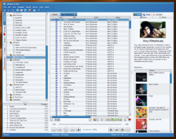 | aTunes es un reproductor de audio similar a iTunes de Apple(r), desarrollado en Java. Permite reproducir formatos MP3, OGG, WMA, WAV, FLAC, MP4, streaming. Permite editar las etiquetas (tags) de los archivos, organizar tu colección de música y convertir los CD's de audio al formato de tu reproductor. |
| Programa: | Audacity 1.2.6 |
|---|---|
| Web: | http://audacity.sourceforge.net |
| Instalador: | Instalar |
| 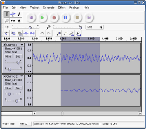 | Audacity es un programa libre y de código abierto para grabar y editar sonidos, disponible para Mac OS X, Microsoft Windows, GNU/Linux y otros sistemas operativos. Entre otras características, Audacity permite: - Convertir cintas y grabaciones a sonido digital o CD. - Editar archivos Ogg Vorbis, MP3 y WAV. - Cambiar la velocidad o el tono de una grabación. - Abrir archivos de sonido "crudos". - Rápida edición de archivos grandes. - Edita y mezcla un número ilimitado de pistas. - Disuelve el sonido suavemente con la herramienta "envolvente". - Eliminar ruidos estáticos, silbidos, u otros ruidos de fondo constantes. - Alterar las frecuencias con la ecualización, filtros FFT y amplificar los bajos. - ... |
| Programa: | Hydrogen Music |
|---|---|
| Web: | http://www.hydrogen-music.org/ |
| Instalador: | Instalar |
| 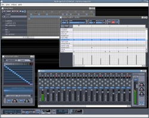 | Hydrogen Music es una herramienta de sonido para generar ritmos de batería en nuestras composiciones. Sus principales características son: - Interfaz amigable y modular - Motor de sonido basado en samples stereo. - Capaz de importar samples en .wav, .au, .aiff y FLAC. - Secuenciador de patterns sin limitaciones. - Hasta 64 ticks por pattern. - 32 pistas de intrumentos con ajustes de volumen, solo y pan. |
| Programa: | LMMS (Linux Multimedia Studio) |
|---|---|
| Web: | http://lmms.sourceforge.net/ |
| Instalador: | Instalar |
| 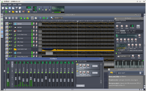 | LMMS es una alternativa a programas comerciales como Fruity Loops(r) para crear tu música. La versión actual incluye: - Editor de canciones y pistas para composición - Editor de Beat y Bassline. - Teclado tipo piano para editar los patterns. - Mezclador de efectos - Compatible con SoundFont2, VST(i), LADSPA, GUS Patches, y soporte MIDI - Importa archivos MIDI y FLP (Fruityloops Project) |
| Programa: | Songbird 1.1.2 |
|---|---|
| Web: | http://getsongbird.com/ |
| Instalador: | Instalar |
| 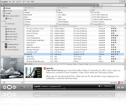 | Songbird es un reproductor multimedia. Está basado en la plataforma XULRunner de Mozilla. - Capacidad de reproduccción de archivos MP3, AAC, Ogg Vorbis, FLAC y WMA. - Capacidad para reproducir Apple FairPlay y Windows Media DRM. - Descarga de archivos MP3 y suscripciones RSS incorporadas. - Suscripción a blogs de mp3 así como listas de reproducción. - Creación de mezclas personalizadas. - Actualizaciones automáticas. - Integración con el servicio Last.fm. - Posibilidad de añadir y visualizar portadas en las canciones. - Capacidad para crear listas de reproducción inteligentes. - Soporte a metadatos ID3. - Obtención de las carátulas de los álbumes de manera automática. - ... |
| Programa: | XBMC 8.10 |
|---|---|
| Web: | http://xbmc.org/ |
| Instalador: | Instalar |
| 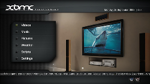 | XBMC Media Center (antes llamado "XBox Media Center") es un centro multimedia de entretenimiento multiplataforma bajo la licencia GNU/GPL. XBMC soporta una amplia gama de formatos multimedia, e incluye características tales como listas de reproducción, visualizaciones de audio, presentación de diapositivas, informes meteorológicos y ampliación mediante plugins. Como Media Center, XBMC puede reproducir la mayoría de los formatos de audio y video, así como mostrar imágenes prácticamente de cualquier fuente, incluidos CD, DVD, dispositivos de almacenamiento masivo e Internet. A través de su sistema de plugins, XBMC puede anadir guías de programas de televisión, YouTube, soporte a adelantos en línea de películas, SHOUTcast, Podcast.... XBMC también funciona como una plataforma de juegos al permitirle a usuarios jugar mini-juegos basados en Python sobre cualquier sistema operativo. |
| Programa: | Avidemux 2.4.4 |
|---|---|
| Web: | http://fixounet.free.fr/avidemux/ |
| Instalador: | Instalar |
| 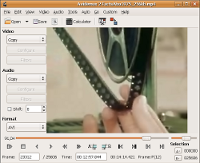 | Avidemux es un editor de video simple con capacidades para cortar, filtrar y codificar, con soporte para varios tipos de archivos incluyendo AVI, MPEG, MP4 y ASF. Avidemux también puede multiplexar y desmultiplexar corrientes de audio dentro y fuera de ficheros de vídeo, en cualquier formato a través de recodificación o usando un modo de copia directa. Tiene incorporado un procesamiento de subtítulos, tanto para Reconocimiento óptico de caracteres (OCR) como para formatos de subtítulos suaves (VobSub sub, ass y srt) y varias capacidades de subtítulos duros VobSub. |
| Programa: | Camstudio 2.0 |
|---|---|
| Web: | http://camstudio.org |
| Instalador: | Instalar |
| 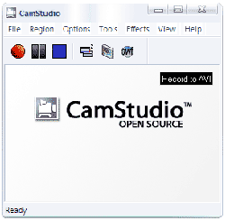 | CamStudio permite grabar la actividad de la pantalla del equipo, incluyendo audio y vídeo, para crear un archivo AVI estandard, o archivos SWF. Esto resulta especialmente útil para: - crear videos demostrativos de una aplicación. - crear tutoriales en vídeo. - crear archivos de vídeo para ayudar a otros usuarios. |
| Programa: | DVDFlick 1.3.0.6 |
|---|---|
| Web: | http://www.dvdflick.net/ |
| Instalador: | Instalar |
| 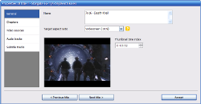 | DVD Flick es una herramienta para la autoría de DVDs de vídeo. Permite seleccionar una serie de vídeos almacenados en el equipo, y procesarlos para crear un DVD capaz de reproducirse en cualquier lector. Adicionalmente, permite anadir pistas de audio, subtítulos y un menú de navegación. |
| Programa: | DVDStyler 1.7.2 |
|---|---|
| Web: | http://www.dvdstyler.de/ |
| Instalador: | Instalar |
| 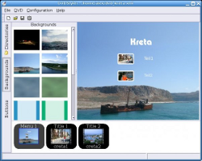 | DVDStyler es una herramienta para la autoría de DVDs de vídeo. Sus características principales son: - Creación y grabación de discos DVD-Vídeo con menus interactivos. - Soporta archivos AVI, MPEG, MPEG-2, MPEG-4, DivX, Xvid, MP2, MP3, AC-3. - Soporta el uso de MPEG y VOB sin necesidad de recodificarlos. - Soporta incluir archivos de audio/vídeo de distinto formato en un mismo DVD. - Interface intuitivo drag & drop - Importar archivo de imagen para establecer el fondo del menu del DVD - Insertar botones, texto, imágenes y otros en la pantalla de menu. - Modificar el color, fuente y otros parámetros de los objetos del menu |
| Programa: | SMPlayer (Mplayer + GUI) |
|---|---|
| Web: | http://www.mplayerhq.hu/ |
| Instalador: | Instalar |
| 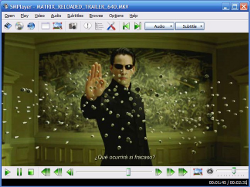 | MPlayer es un reproductor de películas. Reproduce la mayoría de los archivos MPEG, VOB, AVI OGG/OGM, VIVO, ASF/WMA/WMV, QT/MOV/MP4, FLI, RM, NuppelVideo, YUV4MPEG, FILM, RoQ, PVA, soportados por algunos codecs nativos, XAnim, y DLL's Win32. Puede ver VideoCD, SVCD, DVD, 3ivx, DivX 3/4/5 e incluso películas WMV sin la biblioteca avifile. MPlayer tiene información de estado en pantalla (OSD), subtítulos con antialiasing y realimentación visual para el control a través del teclado. Están soportadas tipografías Europea/ISO 8859-1,2 (Húngara, Inglesa, Checa, etc), Cirílico y Koreano así como 9 formatos de subtítulos (MicroDVD, SubRip, SubViewer, Sami, VPlayer, RT, SSA, AQTitle, JACOsub y el nuestro propio MPsub) y subtítulos de DVD (flujos SPU, VobSub y Closed Captions). |
| Programa: | Videolan 0.9.9 |
|---|---|
| Web: | http://www.videolan.org/ |
| Instalador: | Instalar |
| 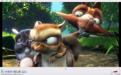 | VideoLAN es una solución de software completa para transmisión y visionado de vídeo, pensado para transmisiones MPEG en redes con gran capacidad de ancho de banda. Su principal ventaja es que no necesita la descarga e instalación de codecs (puesto que los lleva incorporados). VLC incluye un plug-in para Mozilla, que permite ver algunos archivos Quicktime y Windows Media en las webs sin tener que utilizar un reproductor de Microsoft o Apple. Además, puede ser usado como servidor unicast o multicast en redes IPv4 o IPv6. |
| Programa: | VirtualDub 1.8.8, versiones x86 y amd64 |
|---|---|
| Web: | http://www.virtualdub.org/ |
| Instalador: | Instalar 32bits Instalar 64bits |
| 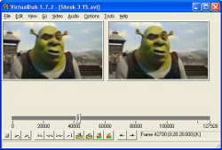 | VirtualDub es una herramienta de código abierto para captura y procesado de vídeo. Dispone de funciones muy avanzadas, es capaz de usar plugins para anadir diferentes técnicas de procesado de vídeo, y puede trabajar con cualquier fichero AVI, independientemente del códec que use, mientras esté instalado. VirtualDub también permite leer los archivos .gvi de Google Video y convertirlos a cualquier formato. Existe una comunidad bastante ámplia que desarrolla filtros y complementos, que cubren prácticamente todas las necesidades que puedan presentarse a la hora de procesar un archivo. |